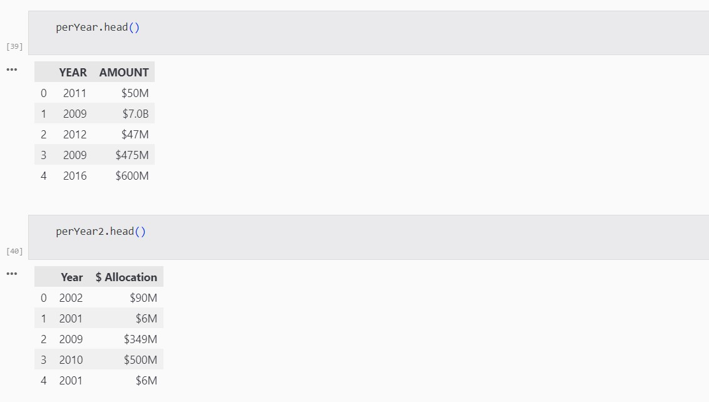

China Debt Trap Analysis
Hello ya'all, In this website we're going to do a In depth Analysis on China Debt Trap by using Python.
Debt Trap
Debt-trap is a theory that describes a powerful lending country or institution seeking to saddle a borrowing nation with enormous debt so as to increase its leverage over it.
China Debt Trap
To gain rapid political and economic ascendency across the globe, China is dispensing billions of dollars in the form of concessional loans to developing countries, mostly for their large-scale infrastructure projects.
These developing nations, which are primarily low- or middle-income countries, are unable to keep up with the repayments, and Beijing then gets a chance to demand concessions or advantages in exchange for debt relief.
Here we'll use the Data Science process and tools to analyse the china debt trap.
It'll be done in following step:
1. Model Fitting
2. EDA
3. CDA
4. Statistical Modelling
5. Data Repesentation
Hypothesis
We're taking the hypothesis that China is taking over the countries by taking control over their economies.
China is burdening the government around the world by giving them loans and funding their project which they'll be unable to payback.
Data Warehousing
Data Collection
Here, we are using collecting the data of various loans and allocation that china have granted to the countries.
We'll track multiple projects and list down their details.
Data Cleaning
In this step, the unused and unrequired data will be removed.
Organising the data
After Collecting the details, we'll organise them according to our needs.
Data Storage
In the last step in data warehousing, we'll store the data in a secured place.
Here we're using github to store the data.
You can access the following data by clicking on the below button
Statistical Modelling
Here we're applying Statistical Modelling technique to classify the data.
We'll classify the data into specific categories to a collection of data for making more meticulous predictions and analysis.
Statistics
Now, we will apply the Statistical tools on the classfied data to get the required Information.
We'll then put the information aside to do the further process.
Data Representation
Here we'll try to visualise the final information into a graph or other visuals tools.
Data visualisation will help us to confirm our hypothesis.
It'll provide a easy way to deduce the required facts.
CDA - confirmatory data analysis
Now we'll use the infromation and visual graph to create a final map, to confirm our hypothesis.
If the final mapping seem to support the hypothesis, then our hypothesis is right.
We're here testing our hypothesis through graphical mean
Python Implementation
Here we're doing the above step in this web compiler in python.